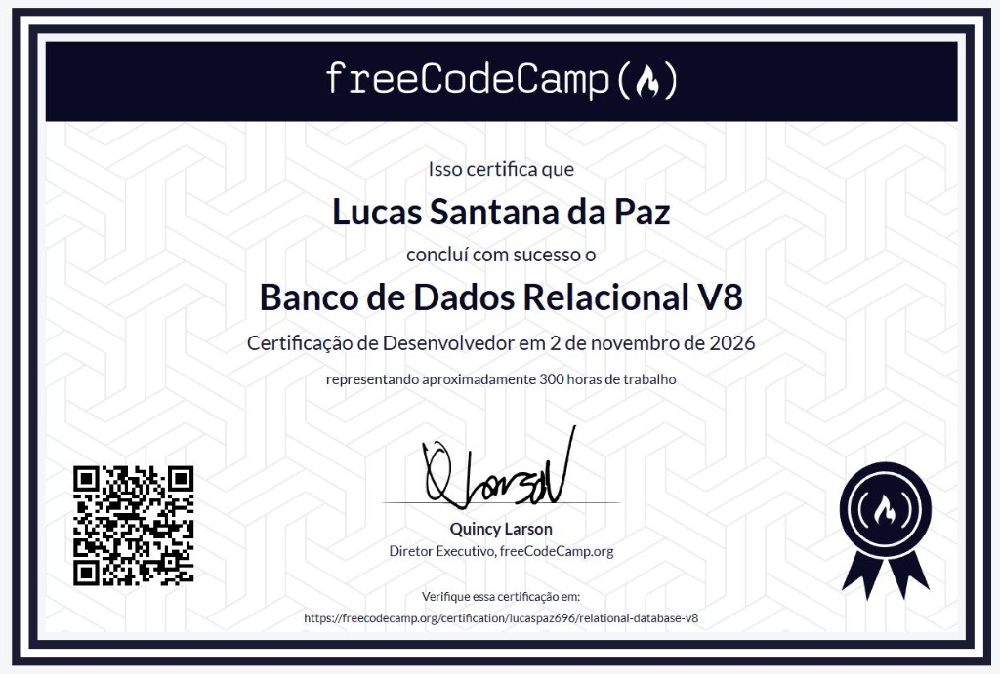
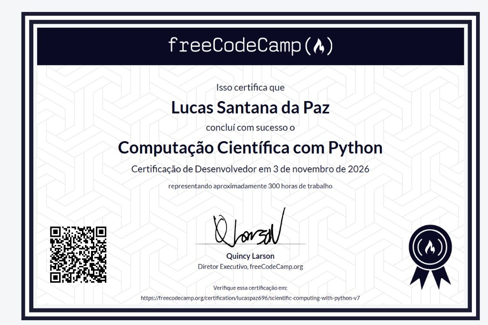
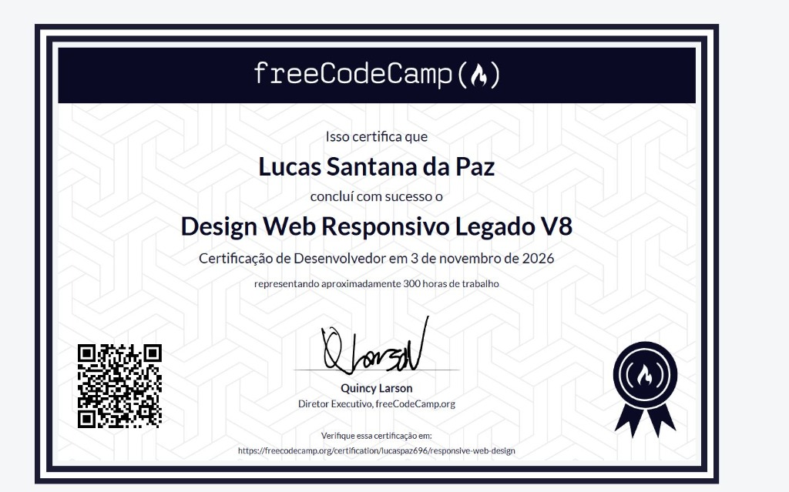

OmniOps AI
Plataforma DevSecOps para análise de código, detecção de vulnerabilidades e apoio à correção.
Disponível para novos projetos
PORTFÓLIO PESSOAL · BELO HORIZONTE
Desenvolvimento Web | Sistemas Empresariais e ERP | SQL | Automação e IA
Estudante de Análise e Desenvolvimento de Sistemas com experiência profissional em suporte técnico ao ERP TecFood na Teknisa. Unindo a investigação de sistemas à construção de interfaces funcionais.
Perfil em resumo
Estágio · Suporte Técnico
Suporte ao ERP TecFood na Teknisa
Outras experiências: Newcity Car — Vistoriador veicular (2024–2025) · Pirelli — Logística (2021)
Ver detalhes da experiênciaDesenvolvimento Web
Prática em projetos
HTML5, CSS3 e layouts responsivos · JavaScript e manipulação de DOM
Sistemas e Dados
Experiência profissional
ERP TecFood em suporte · consultas SQL básicas para diagnóstico
Automação e IA
Em estudo
Automação com n8n, consumo de APIs e uso de LLMs
EXPERIÊNCIA PROFISSIONAL
Atuação técnica em software de gestão empresarial, com foco em atendimento, investigação e resolução de problemas.
Atuação no suporte ao ERP TecFood, solução voltada à gestão de empresas do setor de alimentação.
PROJETOS SELECIONADOS
Uma seleção dos projetos que desenvolvi, com acesso direto às demonstrações e ao código.
Plataforma DevSecOps para análise de código, detecção de vulnerabilidades e apoio à correção.
Sistema de chamados com 4 perfis, SLA por prioridade, comentários e histórico imutável. Monorepo com front-end React/Vite, API Express/TypeScript e PostgreSQL.
Agendamento de consultas com PostgreSQL, sessão administrativa em cookie HttpOnly e token opaco por paciente. 90 testes automatizados.
Agendamento em etapas validadas com regras de disponibilidade isoladas em módulo testável e persistência local.
Catálogo interativo com busca, filtros, favoritos, carrinho, cupom e frete em um único modelo de estado, com sanitização XSS.
Fluxo de pedido no navegador, do cardápio ao checkout, com carrinho persistente e escolha entre entrega ou retirada.
Laboratório de SQL para diagnóstico e suporte a ERP, com 10 cenários de consulta executados sobre um banco real.
Demo de fidelidade com senha guardada como derivador PBKDF2 e PWA com cache offline.
FORMAÇÃO E PRÁTICA
Credenciais da freeCodeCamp e do Google pela Coursera, com o que estudei e as competências que posso aplicar em projetos.

freeCodeCamp Certificação de Desenvolvedor
Percurso prático de linha de comando, scripts Bash, bancos relacionais com PostgreSQL, consultas SQL e controle de versão com Git.

freeCodeCamp Certificação de Desenvolvedor
Formação em programação Python e resolução de problemas por meio de algoritmos, estruturas de dados, cálculos e orientação a objetos.

freeCodeCamp Certificação de Desenvolvedor
Percurso de HTML e CSS para construir páginas acessíveis e adaptáveis a diferentes tamanhos de tela, da estrutura inicial a layouts completos.
GOOGLE DATA ANALYTICS · COURSERA
Concluí o Certificado Profissional Google Data Analytics e os nove cursos que compõem a trilha. Cada credencial abre a verificação oficial e o PDF emitido pela Coursera.
Google Certificado Profissional
Concluído em 9 de novembro de 2026
Conclusão da trilha de nove cursos com avaliações práticas. Reúne preparação, limpeza, análise e comunicação de dados, incluindo planilhas, SQL, Tableau e Python.
O que demonstra: consigo percorrer um fluxo de análise de ponta a ponta, transformar dados em evidências e comunicar resultados para apoiar decisões.
Google Curso Coursera
Concluído em 3 de novembro de 2026
Estudei o ciclo de vida dos dados, o processo de análise, os papéis na área e como formular questões úteis para um problema de negócio.
O que posso aplicar: definir o problema, identificar dados relevantes e estruturar uma análise com foco em decisões.
Google Curso Coursera
Concluído em 4 de novembro de 2026
Pratiquei a definição de problemas, perguntas SMART, pensamento analítico e o uso de métricas para orientar investigações.
O que posso aplicar: traduzir uma necessidade em perguntas claras e critérios observáveis para apoiar decisões com dados.
Google Curso Coursera
Concluído em 4 de novembro de 2026
Estudei coleta e organização de dados, tipos de dados, viés, privacidade e como preparar conjuntos para exploração.
O que posso aplicar: avaliar a origem e a estrutura dos dados e preparar uma base mais adequada para análise responsável.
Google Curso Coursera
Concluído em 4 de novembro de 2026
Trabalhei conceitos de integridade, limpeza e transformação de dados, além de planilhas e SQL para preparar informações.
O que posso aplicar: detectar problemas de qualidade, limpar registros e documentar transformações antes da análise.
Google Curso Coursera
Concluído em 4 de novembro de 2026
Estudei análise e agregação de dados, cálculos em planilhas, consultas SQL e como interpretar resultados no contexto da pergunta.
O que posso aplicar: explorar conjuntos com consultas e cálculos, encontrar padrões e relacionar achados ao problema investigado.
Google Curso Coursera
Concluído em 5 de novembro de 2026
Aprendi fundamentos de visualização, escolha de gráficos e comunicação de resultados com Tableau e apresentações.
O que posso aplicar: apresentar padrões e conclusões com recursos visuais alinhados à mensagem e ao público.
Google Curso Coursera
Concluído em 5 de novembro de 2026
Introdução ao uso de Python para análise de dados, com bibliotecas e técnicas de manipulação e exploração apresentadas no curso.
O que posso aplicar: ampliar meu fluxo de análise com código Python para explorar e trabalhar com dados.
Google Curso Coursera
Concluído em 9 de novembro de 2026
Projeto final em formato de estudo de caso para integrar as etapas do processo de análise de dados e apresentar conclusões.
O que posso aplicar: estruturar um estudo de caso analítico, registrar etapas e comunicar recomendações derivadas dos dados.
Google Curso Coursera
Concluído em 9 de novembro de 2026
Curso sobre uso de ferramentas de IA para apoiar etapas da busca por emprego e preparar materiais e atividades de candidatura.
O que posso aplicar: usar IA como apoio na organização da busca e na preparação de candidaturas, revisando os resultados antes de utilizá-los.
COMPETÊNCIAS E ÁREAS DE ATUAÇÃO
Runtime para APIs e ferramentas.
Uso em projetosAPIs REST e middlewares.
Uso em projetosDesign de endpoints e contratos.
PráticaScripts e estudo.
Em estudoLógica, DOM e estado.
Uso diárioSemântica e acessibilidade.
Uso diárioEstilo visual e responsividade.
Uso diárioEstudo e projetos próprios.
Em estudoARIA, teclado e contraste.
PráticaModelagem e queries em projetos.
PráticaDiagnóstico e suporte a ERP.
Uso profissionalEntidades e relacionamentos.
PráticaLeitura de planos e índices.
Em estudoExperimentação e protótipos.
ExperimentaçãoInstruções e contexto.
EstudoAutomação de fluxos.
EstudoVersionamento e CI.
Uso diárioAmbiente e suporte.
PráticaSOBRE
Estudante de Análise e Desenvolvimento de Sistemas (previsão de conclusão em 2027), busco integrar a precisão do diagnóstico técnico à fluidez do desenvolvimento front-end.
Minha experiência no suporte ao ERP TecFood, na Teknisa, me ensinou a olhar para o software através da operação do usuário. Aprendi a investigar inconsistências, analisar dados via SQL e traduzir problemas complexos em resoluções técnicas eficientes.
Hoje, aplico esse olhar analítico em projetos próprios com JavaScript, enquanto estudo automações com n8n e a aplicação de inteligência artificial para otimizar fluxos de trabalho.
MEU PROCESSO
Um processo simples para transformar uma ideia em um projeto organizado e pronto para apresentar.
Etapa 01
Defino o objetivo, para quem é o projeto, o escopo e o que precisa estar pronto na entrega.
Etapa 02
Entendo o problema, reúno referências e estudo as ferramentas necessárias antes de escolher uma solução.
Etapa 03
Organizo o fluxo, os dados, as telas e as partes que precisam ser construídas.
Etapa 04
Implemento em partes, conecto os componentes e acompanho o resultado em cada etapa.
Etapa 05
Percorro os principais cenários, corrijo problemas e refino a experiência em telas diferentes.
Etapa 06
Organizo o projeto, registro como usar e apresento o que foi entregue e seus próximos passos.
CONTATO
Estou aberto a feedback, conversas técnicas e oportunidades que me façam construir melhor.
Buscar no portfólio
Navegue por seções, comandos e tema.